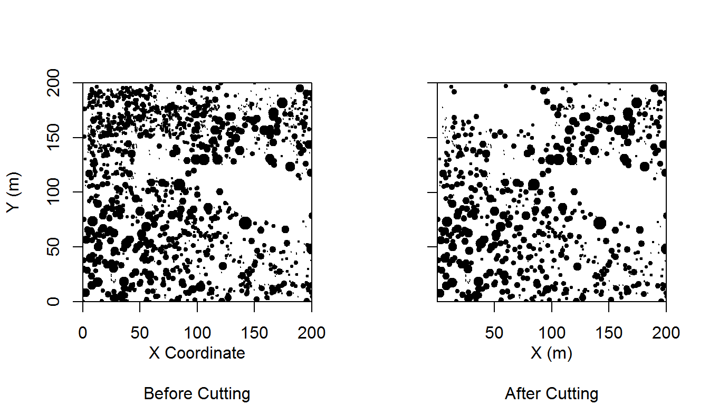
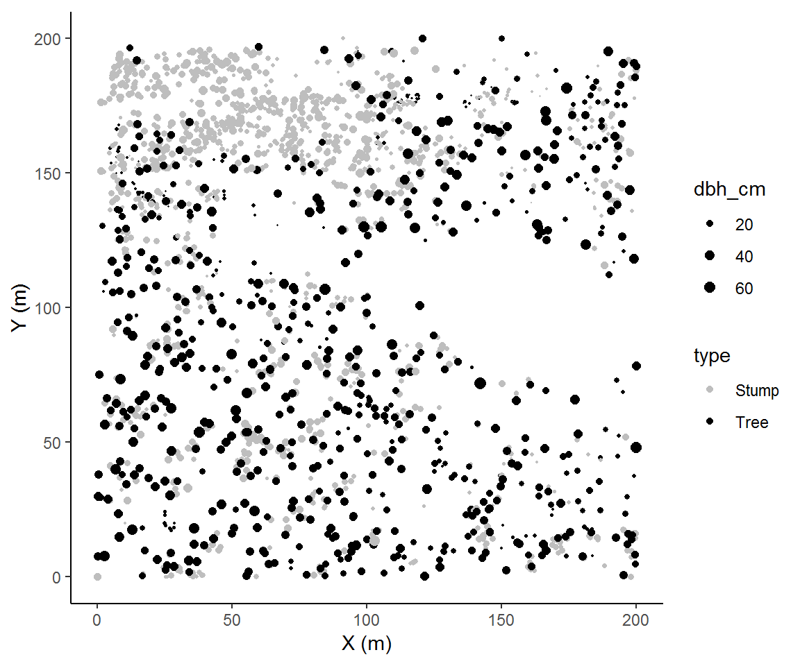
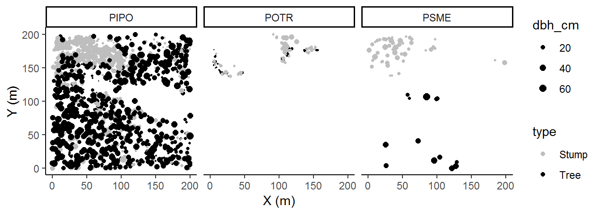
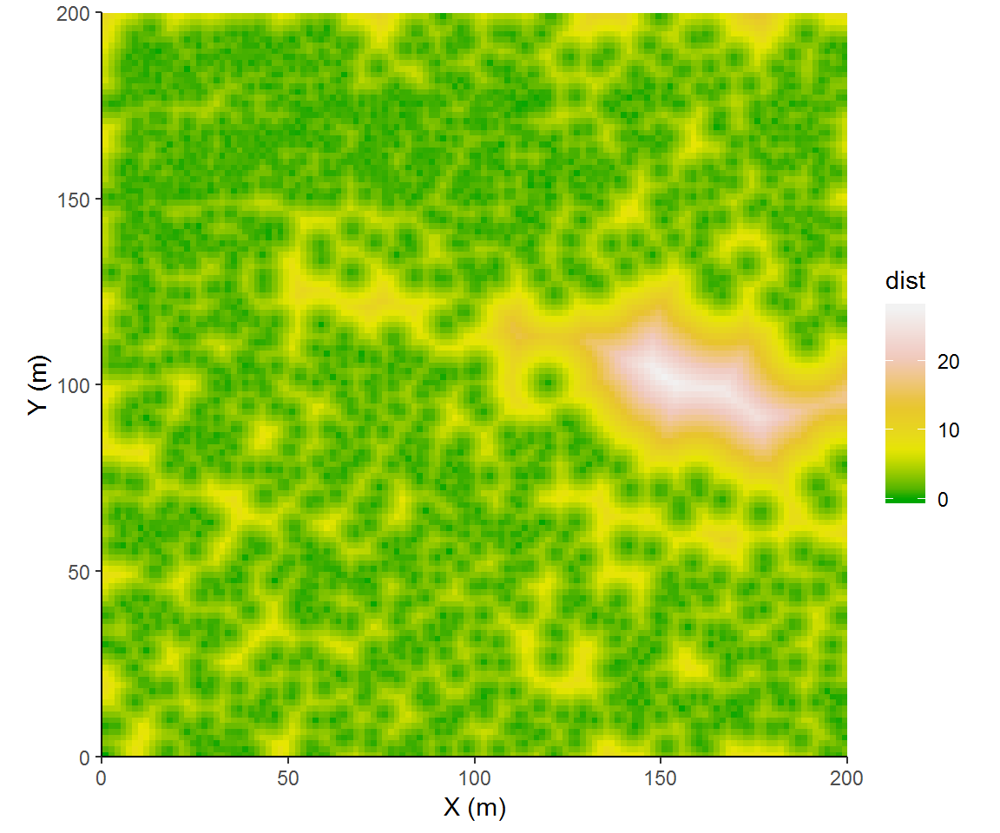

I’m going to continue on with the theme from the prior two blog posts and talk about stem-maps. In the application of point pattern analysis, and spatial statistics more broadly, the end goal is most often description (most often, even inferential methods aim to just test for non-randomness). In this post I will present a couple of, in my opinion, aesthetically attractive and information rich visualizations of exploratory analyses.
We’ll start simple and plot a stem-map. A stem-map is a scatterplot of vegetation locations in a Cartesian coordinate system. In research methods that perform point pattern analyses, this plot usually serves as the first demonstration of the data.
What information is plotted here:
- Locations of trees
- Size of trees (specifically diameter at breast height, not to scale)
- Number of trees
There is some second order information that can be gleaned here. First, a viewer will start to look for patterns in the relative positioning of trees, ‘Are they groupy, are they overdispersed?’. Next a viewer will look at how the spatial patterns vary with trees size, ‘Do trees of different sizes have different patterns? How do trees of different sizes relate to each other spatially?’. These exploratory plots are excellent for hypothesis generation.
Here is the code to produce such a plot. We will use the same data from Ziegler et al. (2017)1 that we explored in a prior post. This plot has locations of trees observed before and after a cutting.
trees <- read.table("https://raw.githubusercontent.com/EcoFire/EcoFire.github.io/master/site_content/data/redfeather.txt", header = T)
par(mfrow = c(1, 2))
precutting_stemmap <- with(trees, plot(x_m, y_m, pch = 19, cex = dbh_cm/40,
yaxs = "i", xaxs = "i", sub = "Before Cutting", xlab = "X Coordinate\n",
ylab = "Y (m)"))
postcutting_stemmap <- with(trees[trees$type == "Tree", ], plot(x_m,
y_m, pch = 19, cex = dbh_cm/40, yaxs = "i", xaxs = "i", sub = "After Cutting",
xlab = "X (m)\n", ylab = "", yaxt = "n"))
axis(side = 2, labels = F)
That looks pretty good to me. It’s actually not far from publication-quality.
Thus far we have plotted (X,Y) coordinates with sizes scaled by a continuous attribute. Like any scatter plot we could continue modifying the plot to add information. For example, we could assign a shape to represent each tree’s species and/or use a color gradient for an additional ordinal or continuous attribute. In this case we will plot the cut trees (stumps) together with the residual trees (tree). The plot we’re making is one of a panel in Figure 3 in Ziegler et al. (2017). Hey, we’re almost, kind of, doing scientific replication!
library("ggplot2")
par(mfrow = c(1, 1))
ggplot(trees, aes(x_m, y_m, color = type, size = dbh_cm)) + geom_point() +
theme_classic() + coord_equal() + scale_color_manual(values = c("grey",
"black")) + scale_size(range = c(min(trees$dbh_cm/25), max(trees$dbh_cm/25))) +
labs(x='X (m)', y='Y (m)')
We’ll now add on species. There are many ways we can add this into our current plot, but my general rule of thumb is to reasonably limit the pieces of information should be in a single plot. Too much and your audience won’t know what they should pay attention to.
There is a rank order of information that we want to convey. In our plotting we have implied that (X,Y) comes first because they get the axes, then type (stump or tree) because our colors provide significant visual contrast, and last size. Now we will add a panel which physically divides the spaces occupied by our species. Species becomes the least important variable because a viewer must now make contrasts across plots to identify differences by species.
ggplot(trees, aes(x_m, y_m, color = type, size = dbh_cm)) + geom_point() +
theme_classic() + scale_color_manual(values = c("grey",
"black")) + scale_size(range = c(min(trees$dbh_cm/25), max(trees$dbh_cm/25))) +
facet_wrap(~species) + labs(x='X (m)', y='Y (m)')
In this case, adding species contributed to our interpretation of these data; specifically, there are some interesting within-species patterns. So the rank order of information importance that we imposed seemed to have been a good decision. One barely needs to examine the legend in order to interpret the plot. Of course, we can’t know if there are other interesting trends unless we visualize the data according to some other rank order, so it’s always a good way to change up how we visualize each factor.
In point pattern analyses, we can describe first- and second-order properties. First-order properties arise from the density of points and second-order properties arise from the interaction of points (and are generally normalized by global, regional or local densities). Here we will focus on ways to describe first-order properties, specifically, neighborhood density, intertree distance, and patch identification.
Neighborhood density plots show the number of trees around each trees at a specific distance or range of distances. We will load the spatstat package, and create a ppp classed object using our coordinates and the bounds of the coordinates. Then we will select a single distance of 6 m and, with nndist, count the neighbors which fall within a 6 m radius. Last we will look at how the inclusion of neighbors depends on the neighborhood scale.
library(spatstat)
treemap = ppp(trees$x_m, trees$y_m, c(0, 200), c(0, 200))
nneighbours = applynbd(treemap, R=6, function(Y, ...){npoints(Y)-1})
nneighbours = setNames(data.frame(nndist(nneighbours)), "nn")
ggplot(nneighbours,aes(nn)) +
geom_histogram(show.legend = FALSE) + theme_classic() +
labs(x = "Number of neighbors within 6 m of tree", y = "Count") +
coord_cartesian(expand = F)Now we can look at the effect of the specific distance on neighborhood size.
n_neighbors = data.frame(dist=NA, neighbors = NA)
for (i in seq_len(10)){
n_neighbors = rbind(n_neighbors, data.frame(
dist = i, neighbors =
applynbd(treemap, R=i, function(Y, ...){npoints(Y)-1})
))
}
ggplot(na.omit(n_neighbors),aes(as.factor(dist), neighbors)) + geom_boxplot() +
theme_classic() + labs(x='Distance from tree',
y="Number of neighbors at distance from tree")These results show that the mean neighborhood size increases with scale of our distance from trees and so too does the spread across individual tree neighborhoods.
Now we also can describe the distances between trees. We can view this two ways: (1) the distance from every location to the nearest trees, or (2) the distance from every tree to its nearest neighboring tree. spatstat uses distmap to implement the first method. We will also use ggplot2 for plotting but note that spatstat has functions for plotting via base graphics.
disttree = distmap(treemap)
disttree = setNames(as.data.frame(disttree), c('x', 'y', 'dist'))
ggplot(disttree,aes(x, y, fill = dist)) + coord_fixed(expand=F) +
geom_raster() + theme_classic() +
labs(x = "X (m)", y = "Y (m)") + scale_fill_gradientn(colors=terrain.colors(9)[c(1,4,5,8,9)]) I tried to select colors that would emphasize some significant steps of intertree distances. We could categorize distances more explicitly, binning intertree distances into forest overstory canopy (<3 m), inter-tree spaces (3 to 9 m), or as meadow (>= 9 m).
disttree$class = with(disttree, ifelse(dist<3, 'overstory canopy', ifelse(dist<9, 'intertree', 'meadow')))
ggplot(disttree,aes(x, y, fill = class)) +
geom_raster() + theme_classic() + coord_fixed(expand=F) +
labs(x = "X (m)", y = "Y (m)") + scale_fill_manual(values=terrain.colors(9)[c(4,5,1)])This next approach looks at intertree distances strictly from the point of trees. This approach more readily lends its result to summary statistics and would be easily disaggregated or conditioned on other factors such as tree species.
Patch identification is clustering method wherein pairwise chains of links are connected to identify member trees of unique clusters. Imagine starting with an individual tree and searching within a radius for trees. Then other member trees are sought within that search radius. This process is continued until there are no more trees within the search radii of member trees. All of the identified trees are then assigned to that unique patch. This method is popular in the forestry literature because results are easily interpretable for silviculturalists2.
Here we will identify patches by producing 6 m buffers from trees and splitting noncontiguous patches. And because we are likely to identify many different patches, we must bin them in order to visualize size variation among individual patches. A little bit of data manipulation is necessary.
library(sp)
library(GISTools)
library(raster)
trees.sp = trees
coordinates(trees.sp)<-~x_m+y_m
trees.buffer = disaggregate(buffer(trees.sp,3))
trees.buffer$patchsize = poly.counts(trees.sp, trees.buffer)
trees.buffer$patchclass = as.character(cut(trees.buffer$patchsize, c(0,1,4,9,19, 2000)))
trees.buffer$patchclass = ifelse(trees.buffer$patchclass=='(19,2e+03]','20+',
ifelse(trees.buffer$patchclass=='(4,9]','5-9',
ifelse(trees.buffer$patchclass=='(0,1]','1',
ifelse(trees.buffer$patchclass=='(9,19]','10-19',
'2-4'))))
trees.buffer$color =ifelse(trees.buffer$patchclass == '20+', '#7fc97f',
ifelse(trees.buffer$patchclass == '10-19', '#beaed4',
ifelse(trees.buffer$patchclass == '5-9', '#fdc086',
ifelse(trees.buffer$patchclass == '2-4', '#ffff99','#386cb0'))))
par(xpd=T, mar=c(4,4,4,9))
plot(extent(trees.sp),xlim=c(0,200), ylim=c(0,200), xaxs="i", yaxs="i", xlab='X (m)', ylab='Y (m)')
plot(trees.buffer, col=trees.buffer$color, add=TRUE)
plot(trees.sp,pch=19,cex=0.25,add=TRUE)
legend(205,200, title='Patch size',legend=c("1","2-4","5-9","10-19", "20+"),
fill=c("#386cb0","#ffff99","#fdc086","#beaed4","#7fc97f"))The search distance is of interest because it will influence the total number of identified patches and patch size. Six meters is useful here because that is the mean crown radius of these trees. In Ziegler et al. (2017), instead of a universal search distance, we used a variable distance defined by each individual tree’s crown radius. In that sense I was representing patches whose trees are approximately touching or overlapping.
Another approach is to use continuum percolation. Continuum percolation seeks to find an optimal scale to describe the clustering of stems into patches. In a sense, this maximizes the potentially available information that patches can yield with regards to trees’ spatial distribution. To implement continuum percolation, we examine the mean patch size as a function of the search distance.
Here will use a different function to construct and identify patch sizes, connected.ppp.
patchsize_dist = data.frame(meansize=NA, dist=1:20)
for (i in seq_len(20)) patchsize_dist$meansize[i] = mean(table(marks(connected(treemap,i))))
patchsize_dist$meansize = patchsize_dist$meansize /max(patchsize_dist$meansize )
ggplot(patchsize_dist,aes(x=dist, y=meansize)) +geom_line() + theme_classic() +
geom_smooth( method = "glm", method.args = list(family = "binomial"), se = FALSE)The fitted logistic regression shows an inflection point at a scale of 13 m. This would be an optimal single scale to pursue an analysis of clustering. On the other hand, the empirical distribution has plateaus at 10m and 13m and 15m suggesting three distinct scales of clustering. Each of these may be ecologically meaningful.
Outside of use in traditional manuscripts, interactive plots may be useful ways to highlight data. I’ve only gotten started with interactive plots, and have started with plotly. To host offline plots, the process is simple:
Ziegler, J.P., Hoffman, C., Battaglia, M. and Mell, W., 2017. Spatially explicit measurements of forest structure and fire behavior following restoration treatments in dry forests. Forest Ecology and Management, 386, pp.1-12.↩
Terminology is a bit of a stickler here. In statistics parlance, these are clusters. Biologically speaking we could refer to these as groups, but group retention and group cutting have specific definitions. Here I opt for the more landscape ecology terminology of patch.↩